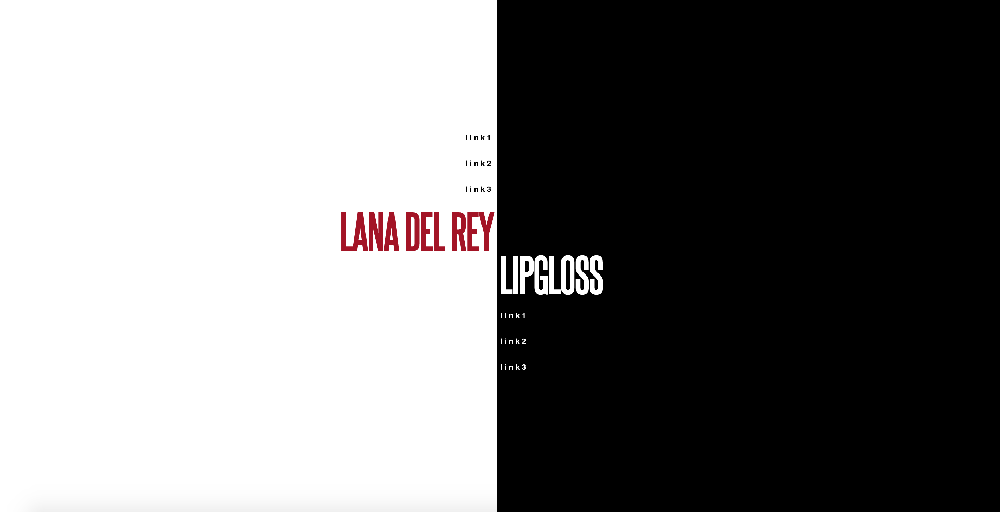
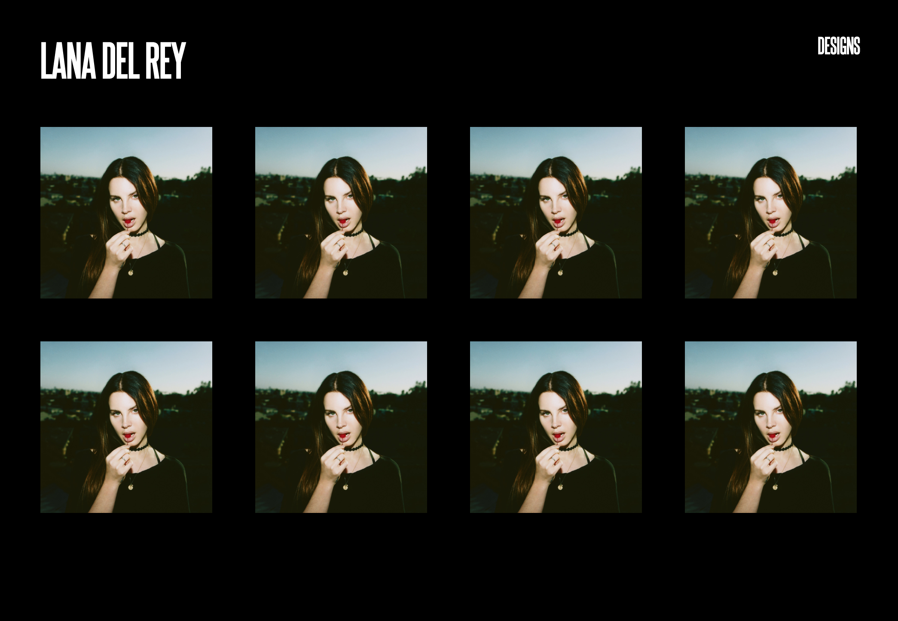
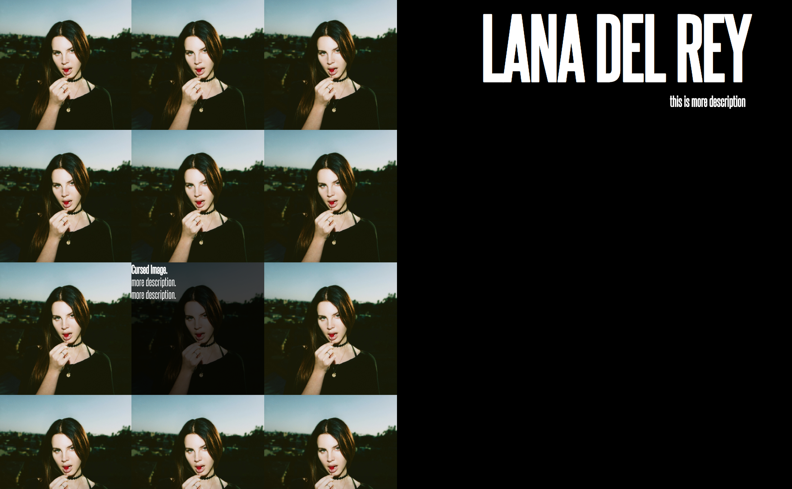
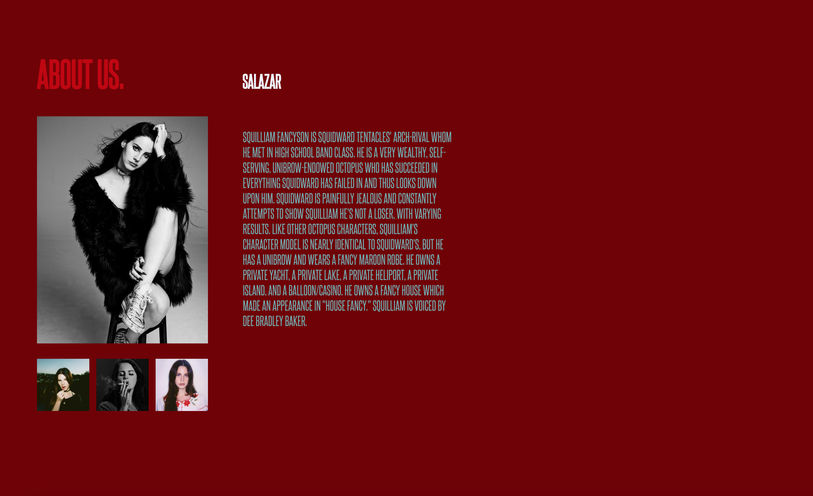
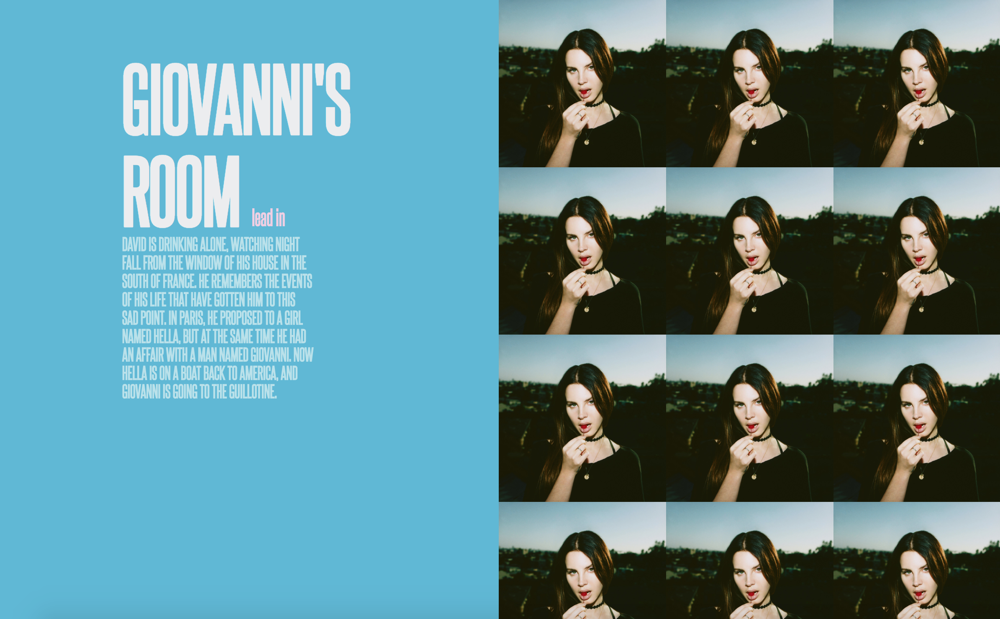

A themed HTML website that is centered around a black and white color scheme as well as checkers (and Lana Del Rey). Click here to enter the theme. When you click on the link this is what you will see:
|  | HOMEPAGE This is the homepage, which will be what you first see when clicking the link to the checkerboard themed website. |
|  | LINK 1 This is the first link listed on the left side of the screen. It is a simple display of images and descriptions. |
|  | LINK 2 This is the second link listed on the left side of the screen. DESCRIPTION |
| LINK 3 This is the third link listed on the left side of the screen. DESCRIPTION | |
|  | LINK 4 This is the fourth link, on the right side of the screen. |
| LINK 5 WORK IN PROGRESS. | |
|  | LINK 6 This is the sixth link listed on the left side of the screen. |